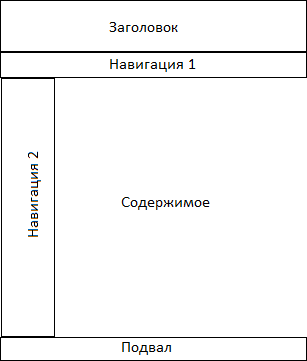

Постановка задачи
При показе на широком экране (например, от 768px) дизайн предполагается стандартным. Опишем его сверху вниз:
- Верхняя часть - логотип.
- Далее - горизонтальное меню на основе текста. Закладочки, скругленные уголки, надписи под углом (типа стикеров на кнопке), градиенты, подсветки и прочие анимации привествуются.
- Далее - с левого бока навигация с картинками. Если студент специализируется в вебе, то ссылки могут быть на сделанные им ранее сайты, картинки - это минискриншоты главных страниц. Если в ACM - фото с чемпионатов, если в робототехнике - то фото его роботов и т. д.
- Далее - с правого бока основной контент с кратикой и текстом.
- В самом низу футер с копирайтами, ссылками, контактами и т. п.
При уменьшении ширины экрана (вплоть до 768 px) картинки масштабируются, т. е. тоже пропорционально уменьшаются.
При дальнейшем уменьшении ширины экрана (например, от 550px до 768px) навигация "уплывает" под основной контент. Верхнее меню не занимает несколько строк, уменьшаются отступы между пунктами меню.
При дальнейшем уменьшении ширины экрана (например, менее 550px) верхнее меню, которое было горизонтальным, перестраивается в вертикальное и занимает несколько (сколько ссылок) строк. Далее можно убрать картинки из основного контента. При повороте планшета на 90 градусов (смене вертикали и горизонтали) макет должен перестраиваться соответствующим образом.
Сайт должен выглядеть почти одинаково во всех популярных современных браузерах (в частности, IE от 9 версии; Chrome от 31 версии; Firefox от 27 версии). Готовые CSS-фреймворкаи типа Bootstrap использовать запрещено. Если для анимации очень (!) нужна библиотека jQuery, ее использование можно согласовать с преподавателем. Однако все, что можно сделать без скриптов на чистом CSS, должно быть сделано без скриптов. За образец можно взять сайт, созданный в поддержку книги Бена Фрейна (Ben Frain) HTML5 и CSS3: Разработка сайтов для любых браузеров и устройств. Фотогалерея. Фотографии располагаются на сервере. Срок сдачи - до 28.10.2015.
Как это должно выглядеть
Справа вы можете видеть примерное расположение элементов в обычном положении.
Для реализации этой задачи была выбрана техника верстки на основе блоков с активным использованием свойства float.
Итог
Поскольку вы читаете этот текст, скорее всего, задание я выполнил.